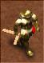
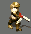
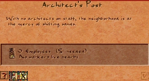

Architect's Post
The Architect's Post is the city's defence against structural collapse. It dispatches roaming Architects who patrol the road network and reduce the collapse risk of every building they pass. Without regular architect visits, buildings gradually accumulate structural damage until they collapse.
Collapse does not spread the way fire does — a collapsing building does not trigger its neighbours. However, a single collapse destroys the building entirely and can cause temporary unemployment and service gaps. Large buildings such as temples and monuments are especially prone to structural decay and benefit greatly from architect coverage.
The Architect's Post has neutral desirability and can be placed anywhere in the city without affecting the housing evolution of nearby plots.
Stats
- Cost (Normal)
- 25 Db
- Cost by difficulty
- VE 6 · Easy 12 · Normal 25 · Hard 40 · VH 60
- Labor category
- Infrastructure
- Fire risk
- Low
- Damage risk
- None
- Overlay
- Damage D
Overview
In ancient cities of mud brick and timber, structural maintenance was a constant concern. Buildings slowly deteriorated without upkeep, and a collapse in a dense neighbourhood could disrupt the supply chains and services that depended on that structure. Organised maintenance crews — analogous to today's building inspectors — were a practical necessity of urban management.
In the game, the Architect's Post models this as a roaming service building. Architects walk circuits through the street network, reducing the collapse risk of every building they pass. The Damage overlay (hotkey D) is the primary tool for planning Architect's Post placement — it colour-codes buildings by accumulated structural risk and shows which areas need coverage.
Mechanics
Architect
The Architect's Post sends out one Architect, a roaming walker who travels along the road network. Every building he passes has its collapse risk reduced. The further a building is from regular architect visits, the more its structural risk accumulates over time.

Speed 54.4 tiles/month · ~53 tiles sporadic range

Walker animation- Reliable range: 43 tiles. Buildings within this radius are consistently serviced on every patrol.
- Sporadic range: ~53 tiles. The architect occasionally wanders further but coverage is unreliable at this distance.
- Re-spawn delay: 4 days. A new architect departs 4 days after the previous one returns.
- Service area: when passing a building, the architect reduces its collapse risk within a small radius around his current tile. High-risk buildings are targeted with greater effect.
The Architect is restricted to roads and cannot cut across empty terrain. Plan your road network so his patrol naturally reaches all vulnerable structures in the coverage zone.
Collapse risk
All buildings accumulate structural decay over time. The rate depends on the building type — large public buildings such as temples, courthouses, and monuments decay faster than small residential plots. If collapse risk reaches the maximum threshold and no architect has visited recently, the building collapses and is removed from the map.
- Collapse is not contagious: unlike fire, a collapsing building does not damage its neighbours. Each building's risk is tracked independently.
- Large buildings decay faster: due to walker mechanics, an architect passes a large building on both entry and exit of its footprint, providing double coverage per pass — but the absolute decay rate of large buildings is also higher, so they still need frequent visits.
- Staffing matters: an understaffed Architect's Post sends architects less frequently, leaving longer gaps between patrols. Maintain adequate labour supply.
- The Architect's Post itself has no collapse risk — architects maintain their own building in passing.
Placement
The Architect's Post needs only a road connection to operate and has no desirability effect, so it can be placed anywhere convenient. Use the Damage overlay (D) to guide placement:
- Prioritise coverage of large civic buildings — temples, palaces, and monument sites accumulate risk fastest and suffer the most if they collapse.
- One Architect's Post reliably covers a corridor of roughly 43 tiles along the patrol road. On a grid layout this typically covers an entire city district.
- Industrial zones with many buildings clustered together may need a second post to ensure every structure receives visits before risk reaches critical levels.
- Place the Architect's Post on or near the main road spine so the architect's patrol naturally fans out into side streets.
Tips
- Open the Damage overlay (D) after placing new large buildings. Temples and courthouses start accumulating risk immediately — an Architect's Post should be nearby before they're built, not after.
- The Architect's Post is unlocked from the start of mission 1 (Thinis) — unlike the Firehouse in Nubt, it does not require a tutorial event.
- A single well-placed post often covers an entire small city. Only add a second post when the overlay shows persistent red buildings that the first architect cannot reach in time.
- Road dead-ends force the architect to retrace his steps, halving effective range in that direction. Avoid dead-end branches in areas with high-risk buildings.
- Monument construction sites are immune to collapse while under construction. Once complete, they begin accumulating decay — ensure architect coverage is in place by the time the monument finishes.
In the original game

Developer reference
JS config — building_architect_post.js
building_architect_post { animations { _pack { pack:PACK_GENERAL } preview { id:81 } base { id:81 } work { pos [20, -35], id:81, offset:1, max_frames:11 } } labor_category : LABOR_CATEGORY_INFRASTRUCTURE overlay : OVERLAY_DAMAGE sound_channel : SOUND_CHANNEL_CITY_ENGINEERS_POST min_houses_coverage : 50 building_size : 1 meta { help_id: 81, text_id: 104 } info_sound : "Wavs/eng.wav" cost [ 6, 12, 25, 40, 60 ] laborers [5] fire_risk [2] damage_risk [0] flags { is_infrastructure: true } }
The spawn handler in the same file calls common_spawn_roamer(FIGURE_ARCHITECT, min_houses_coverage, ACTION_1_ENGINEER_CREATED). Animation key switches between "work" (staffed) and "none" (idle/unstaffed) via building.can_play_animation.
C++ — building_architect_post.h / building_architect_post.cpp
The C++ class is minimal — all logic lives in the JS script and the figure implementation. The only override is drawing:
class building_architect_post : public building_impl { BUILDING_METAINFO(BUILDING_ARCHITECT_POST, building_architect_post, building_impl) virtual building_architect_post *dcast_architect_post() override { return this; } virtual bool draw_ornaments_and_animations_height( painter &ctx, vec2i point, tile2i tile, color color_mask) override; };
draw_ornaments_and_animations_height() calls draw_normal_anim() and returns true — no extra ornament logic.
Architect figure — figures.js / figure_architector.cpp
figure_architector { animations { _pack { pack:PACK_SPR_MAIN } walk { id:4, max_frames:12 } death { id:5, max_frames:8, loop:false } work_ground { id:49, max_frames:6 } work_stand { id:50, max_frames:6 } big_image { pack:PACK_UNLOADED, id:25, offset:FIGURE_ARCHITECT } } sounds { engineer_extreme_damage_level { sound:"engineer_e01.wav" } engineer_i_am_works { sound:"engineer_e02.wav" } engineer_high_damage_level { sound:"engineer_g01.wav" } engineer_no_food_in_city { sound:"engineer_g02.wav" } engineer_city_not_safety { sound:"engineer_g03.wav" } engineer_need_more_workers { sound:"engineer_g04.wav" } engineer_gods_are_angry { sound:"engineer_g05.wav" } engineer_city_has_bad_reputation { sound:"engineer_g06.wav" } engineer_city_is_good { sound:"engineer_g07.wav" } engineer_low_entertainment { sound:"engineer_g08.wav" } engineer_city_is_bad { sound:"engineer_g09.wav" } engineer_city_is_amazing { sound:"engineer_g10.wav" } } category : figure_category_citizen max_damage : 20 terrain_usage : TERRAIN_USAGE_ROADS max_roam_length : 640 max_service_buildings : 100 permission : epermission_maintenance }
provide_service() in figure_architector.cpp iterates a grid area around the architect's current tile and reduces collapse_risk on every building found — either completely (risk_reduction ≥ 100) or as a percentage. phrase_key() picks a situation sound based on city state (damage levels, sentiment, food, labour).
Game message — game_messages_en.js
| Field | Value |
|---|---|
| ID | 81 |
| Title | Architect's Post |
Many buildings in the city are susceptible to collapse if not tended to by architects. Unlike fire, a collapsed building won't cause neighboring buildings to collapse too. Nevertheless, collapse is a real risk that can be prevented by placing Architect's Posts nearby and keeping them well staffed. Architects from Architect's Posts roam the city and reduce a building's risk of collapse as they pass by. The damage overlay is a helpful guide to collapse prevention.